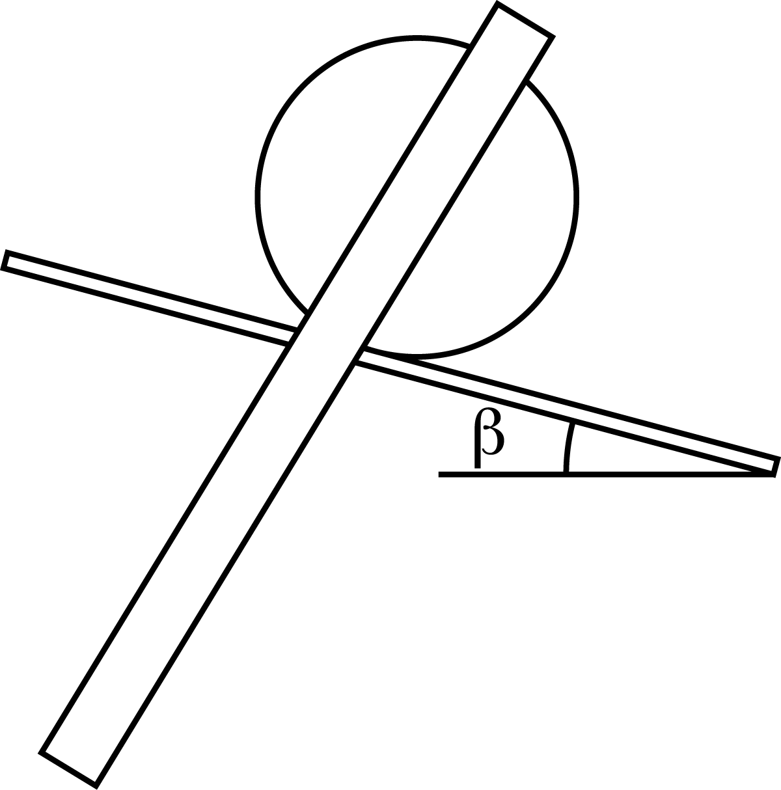

W21 (2021) — English translation
Let's balance the ruler on the edge of the block, thereby determining the position of the center of mass of the ruler: $x_r=248~\mathrm{mm}$. Using the ruler as a lever, we determine the mass ratio $M/m$ of the cylinder and the ruler $$M/m=3.44±0.22.$$ Закрепим линейку в качестве стержня на основание cylinderа using клейкую массу. Сторону линейки со шкалой направим в сторону cylinderа: так удобнее оlimitять положение линейки относительно cylinderа. На край стола закрепим лист с начерченными линиями под сными углами к вертикали. Запустим колебания системы cylinderа and стержня. The quantity амплитуды фиксируем по совпадению с линиями на листе. Линии на листе не обязательно рисовать как rayand from одного центра: можно подобрать положения так, чтобы линия совпадала с наклонённой линейкой for/at соответствующем положении cylinderа. Energy системы for/at колебаниях, выраженная via/through угловую амплитуду $\varphi$: $$W=mgd(1-cos\varphi )≈mgd \varphi^2/2.$$ For/At повороте cylinderа со стержнем на angle $d\alpha$ torqueы реакции опоры совершает работу: $$\delta A=-M⋅d\alpha=-k(m+M)g⋅d\alpha.$$ Остальные силы работы не совершают. Note that даже когда system находится в положении equalsвесия, но движение ещё не закончилось, system всё equals характеризуется угловой амплитудой $\varphi$. Energy change системы for/at повороте на малый angle $d \alpha$: $$dW=mgd⋅\varphi d\varphi=-k(m+M)g⋅d\alpha.$$ Energy loss за 1/4 periodа (here sign «$\Delta$» означает убыль, not изменение): $$mgd⋅\varphi⋅\Delta\varphi_{T/4} = k(m+M)g⋅\varphi.$$ За $N$ periodов quantity убыли амплитуды будет в $4N$ times больше. Let us express coefficient of friction качения $$k=\frac{m}{m+M} \frac{d⋅\Delta\varphi_N}{4N}.$$
$x_{up}$, mm $d$, mm $\varphi_0$, ° $\varphi$, ° $N$ $k$, mm $\Delta k$, mm 0 186.5 30 10 18 0.23 0.019 20 166.5 30 10 16 0.231 0.02 40 146.5 30 10 14 0.233 0.022 40 146.5 40 10 21 0.233 0.016 40 146.5 40 20 13 0.25 0.025
As a result, the rolling friction coefficient is $$k=(0,24 \pm 0,02)~\mathrm{mm}.$$
Using adhesive paste, attach the ruler as a rod to the base of the cylinder. Let's place this system on a block. Let's start tilting the block (Fig. 1). At a certain angle of inclination $\beta$ of the block to the horizon, the system will begin to slide. Friction coefficient $$ \mu = \mathrm{tg}~ \beta=\mathrm{tg}~ (17° \pm 1°)= 0,31 \pm 0,02 .$$
